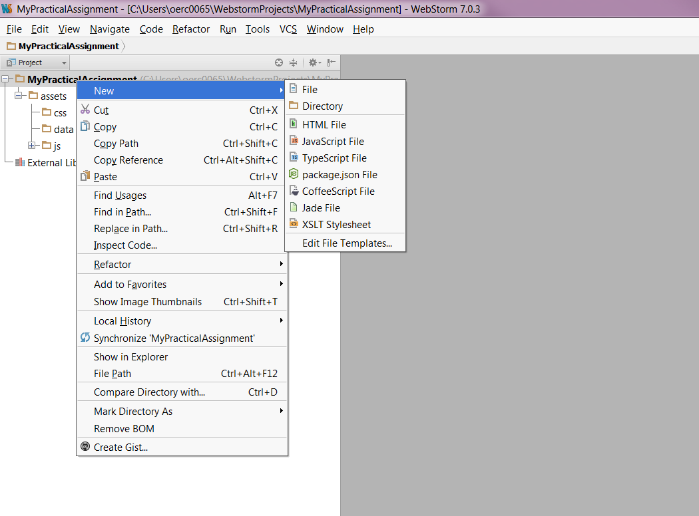
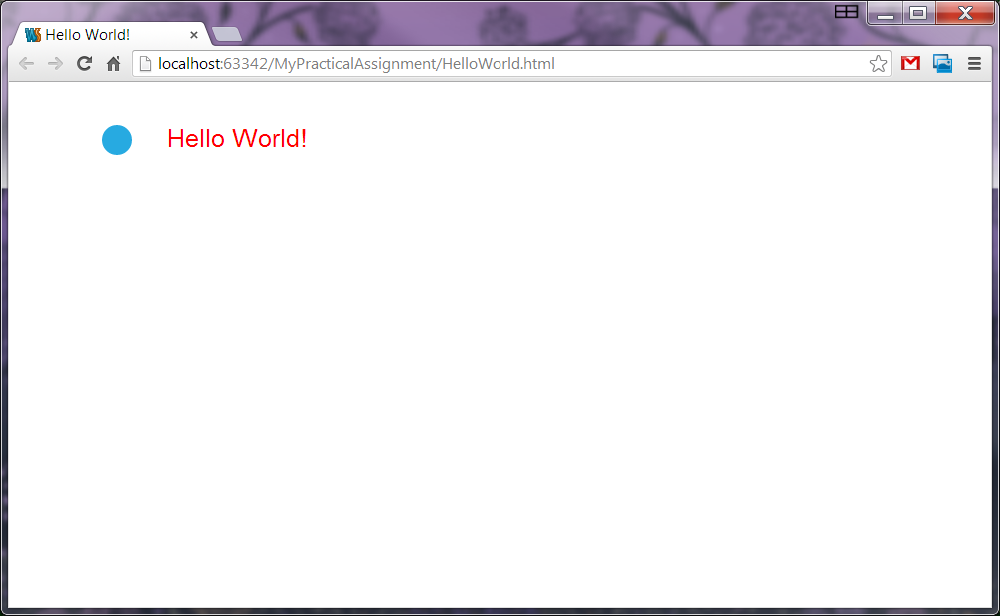
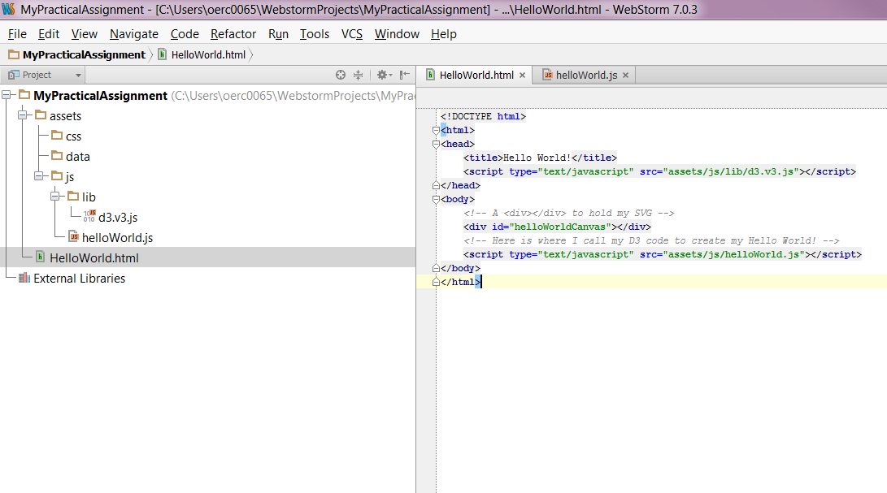

Visual Analytics
VISUALISATION ON THE WEB
WHAT YOU'LL LEARN
The Basics
More Advanced
D3.js -
Data Driven Documents
Who are we?


Outline
Manipulating elements in the browser with JavaScript
Quick start guide
Hello World! in D3
Introduction to drawing in the browser with D3
Accessing your data from files with D3
Interaction & animation
Worked through examples
Introducing D3
D3 (Data-Driven Documents):
- A JavaScript library that utilizes SVG, HTML, and CSS for creating data visualization on the web
- Created by Mike Bostock, Vadim Ogievetsky, and Jeff Heer
- With D3, you can:
- Easily load your data into the browser
- Inspect and manipulate your data through the Document Object Model (DOM)
- Include interaction and animation in your visualization easily
- Download the latest version of D3 (http://d3js.org/)
Getting Started: HTML
HTML (Hypertext Markup Language):
- Is used to structure content for web browsers
- Saved as plain text file with .html extension
- Many different revisions of the HTML standard
- HTML5 is the current revision
- The DOCTYPE declaration defines the document type:
<!DOCTYPE html>is the doctype for HTML5
- "Mark up" content to specify semantic structure by adding tags to create elements
HTML Elements and Attributes
- Elements are entities for structuring the HTML documents
- Most of the elements are defined with a start tag, an end tag, and the content in between
<element>Content in between</element> <!-- Element with closing tag -->- For example:
<h1>Hello World!</h1>- Elements can have attributes to provide extra information about them
- The attributes are defined in the start tag and are in name/value pairs: name = "value"
- For example:
<h1 class="myStyle">Hello World!</h1>Example: HTML
<!DOCTYPE html>
<html>
<!-- The content between the <html> and </html> describes the web page -->
<head>
<!-- <head></head> handles all the head elements -->
<!-- <head></head> also provides the information about the page -->
<!-- Tags that can be inside <head> element: <title>, <style>, <meta>, <link>, <script>, <noscript>, <base> -->
<!-- <title></title> gives the title of the page -->
<title>Visual Analytics</title>
</head>
<body>
<!-- The content between the <body> and </body> is the visible page content -->
<h1>Visual Analytics</h1>
<p class="desc">Examples of <em>visualisation</em>:</p>
<!-- Valid class or id: Must start with a letter and can be followed by letter, digits, hypens, and underscores -->
<div id="iAmUnique1" class="desc">
<ul>
<li>Parallel coordinates</li>
<li>Scatter plots</li>
</ul>
</div>
</body>
</html>Example: HTML

Getting Started: Developer Tools
- Nowadays, every modern-day browser has built-in developer tools
- Examples: Chrome, Firefox, Safari, etc.
- Can view source code of an HTML page by right-click on the page then select View page source (e.g. Chrome and Safari)
- See the DOM by the inspecting the element
- For example in Chrome or Safari, right-click on the page then select Inspect element
Example: Developer Tools

Getting Started: DOM
DOM (Document Object Model):
- Hierarchical structure of HTML
- Each pair of bracketed tags is an element
- Refer to elements' relative relationships to each other in terms of: parent, child, sibling, ancestor and descendant
- In the previous example:
bodyis the parent element to its children -h1,panddiv(which are siblings to each other)- And all elements are descendants of
html
Example: DOM

Getting Started: CSS
CSS (Cascading Style Sheets):
- The visual representation of the document structure
- Consists of selectors and properties
selector {
property: value;
}
selectorA, selectorB {
property: value;
}- For example:
p {
font-size: 24px;
}
h1, .desc {
color: #F179D1;
font-weight: bold;
}CSS-Style Selectors
Type selectors: match DOM elements with the same name
p /* Selects all paragraphs */Descendant selectors: match elements contained by another elements
div p /* Selects p elements contained in a div */Class selectors: match elements of any type assigned to a specific class
.desc /* Selects elements with class "desc" */
.desc.highlight /* Selects hightlighted desc */ID selectors: match the element with the specific ID
#iAmUnique1 /* Selects element with ID "iAmUnique1" */Combination: combined to target specific elements
div.desc /* Selects divs with class "desc" only */Referencing Styles
Three ways to apply CSS styles rules to HTML document:
- Embed the CSS in the HTML
<head>
<style type="text/css">
h1 { font-size: 16px; }
</style>
</head>- For example:
<!DOCTYPE html>
<html>
<head>
<title>Visual Analytics</title>
<!-- Embedding the CSS in the HTML -->
<style type="text/css">
h1 { font-size: 16px; }
</style>
</head>
<body>
<h1>Visual Analytics</h1>
</body>
</html>Referencing Styles
Three ways to apply CSS styles rules to HTML document:
- Reference an external stylesheet from the HTML
<head>
<link rel="stylesheet" href="style.css">
</head>- For example:
<!DOCTYPE html>
<html>
<head>
<title>Visual Analytics</title>
<!-- Reference an external stylesheet from the HTML -->
<link rel="stylesheet" href="style.css">
</head>
<body>
<h1>Visual Analytics</h1>
</body>
</html>Referencing Styles
Three ways to apply CSS styles rules to HTML document:
- Attach inline styles
<h1 style="color: red; font-size: 24px;">An example of inline style</h1>- For example:
<!DOCTYPE html>
<html>
<head>
<title>Visual Analytics</title>
</head>
<body>
<!-- Attach inline styles -->
<h1 style="color: red; font-size: 24px;">Visual Analytics</h1>
</body>
</html>Getting Started: SVG
SVG (Scalable Vector Graphics):
- A text-based image format that is defined using markup code same as HTML
- You can include SVG code directly inside any HTML document or
- Insert it dynamically into the DOM using JavaScript
- SVG is XML-based therefore all elements must have a closing tag:
<element></element> <!-- Element with closing tag -->
<element/> <!-- Element with self-closing tag -->
- Coordinate system starts at the top-left corner
SVG Elements and Shapes
- An SVG image begins with
<svg>element - The width and height of the SVG image can be defined by the width and height attributes
- A simple SVG example:
<svg width="100%" height="100%">
<rect x="85" y="5" width="40" height="40" fill="rgba(255, 0, 0, 1.0)"></rect>
</svg>SVG Elements and Shapes
- Some of the pre-defined shapes in SVG:
- Rectangle
<rect> - Circle
<circle> - Ellipse
<ellipse> - Line
<line> - Polyline
<polyline> - Polygon
<polygon> - Path
<path>
- Rectangle
- SVG also renders text using
<text>element - You can group together your SVG shapes using
<g>element
Styling SVG Elements and Shapes
- Default style is black fill with no stroke
- You can use SVG properties such as
fill,strokeandopacityto style your SVG elements and shapes - For example using inline styles:
<rect x="85" y="5" width="40" height="40" fill="red" stroke="blue" stroke-width="5" />- Or through the CSS approach:
<rect x="85" y="5" width="40" height="40" class="mySvgStyle" />.mySvgStyle {
fill: red;
stroke: blue;
stroke-width: 5;
}Example: SVG
<svg width="800" height="220">
<!-- The order when the elements are called determines the ordering of the objects -->
<rect x="250" y="10" width="500" height="200" stroke-width="1" stroke="black" fill="white"></rect>
<!-- <g> groups the shapes together allowing you to transform and style the whole group as a single shape -->
<g transform="scale(3) translate(100, 10)">
<circle cx="25" cy="25" r="20" fill="rgba(127, 201, 127, 0.7)" stroke="rgba(127, 201, 127, 0.5)"
stroke-width="5"></circle>
<ellipse cx="65" cy="25" rx="35" ry="15" fill="rgba(190, 174, 212, 0.7)" stroke="rgba(190, 174, 212, 0.5)"
stroke-width="5"></ellipse>
<rect x="85" y="5" width="40" height="40" fill="rgba(253, 192, 134, 0.7)" stroke="rgba(253, 192, 134, 0.5)"
stroke-width="5"></rect>
</g>
</svg>Getting Started: JavaScript
- Scripting language for manipulating the DOM after a page has been loaded in the browser
- Type the code directly in the JavaScript console or
- Load the script to the browser using a web page
- Two ways to reference the scripts:
- Directly in the HTML, between two
scripttags
<body>
<script type="text/javascript">
alert("Hello, world!");
</script>
</body>- Stored in a separate file with a .js suffix, and then referenced in the HTML
<head>
<title>Page Title</title>
<script type="text/javascript" src="script.js"></script>
</head>Example: JavaScript
/* Declaring a variable of an array of objects */
var myChocolate = [
{"type": "milk", "cocoa_butter": 15, "quantity": 13 },
{"type": "sweet", "cocoa_butter": 18, "quantity": 8 }];
/* A function to loop through the array and display the cocoa butter content */
function displayCocoaButter() {
var index;
// Loop through the array of objects
for (index = 0; index < myChocolate.length; index++) {
/* Create a <p> element */
var _p = document.createElement("p");
/* Get the cocoa butter content and add it to the <text> node */
var _text = document.createTextNode("Cocoa butter content: " + myChocolate[index].cocoa_butter);
/* Add the created <text> node to the <p> element */
_p.appendChild(_text);
/* Add the created <p> element to <body> */
document.body.appendChild(_p);
}
}Example: JavaScript

Quick Start Guide
- Download WebStorm and install on your machine
- Open WebStorm and choose Create New Project
- Specify the project name and location. In the Project type option, select Empty Project
Quick Start Guide
- In the project that you have created, created a new directory called assets containing three other directories: css, data and js
- Download D3 into the directory lib inside js. The lib directory would contain all your external libraries
Quick Start Guide
You can now start to create your first Hello World! in D3
Hello World! in D3
We start with the HTML, where we have:
<!DOCTYPE html>
<html>
<head>
<title>Hello World!</title>
<!-- Reference the D3 library -->
<!-- Note: Change the path to where you have saved your D3 library -->
<script type="text/javascript" src="assets/js/lib/d3.v3.js"></script>
</head>
<body>
<!-- A <div></div> to hold my SVG -->
<div id="helloWorldCanvas"></div>
<!-- Here is where I call my D3 code to create my Hello World! -->
<!-- Note: Change the path to where you have saved your JavaScript -->
<script type="text/javascript" src="assets/js/helloWorld.js"></script>
</body>
</html>You can save this as HelloWorld.html
Hello World! in D3
Now we can start writing the Hello World! in D3
// create the SVG container
var svg = d3.select("#helloWorldCanvas")
.append("svg")
.attr("width", 500)
.attr("height", 300);
// add the text that we want to display
svg.append("text")
.attr("x", 150).attr("y", 57)
.attr("fill", "red")
.attr("font-size", "25px").attr("font-family", "sans-serif")
.text("Hello World!");
// now let's add a circle to accompany the text
svg.append("circle")
.style("fill", "#27aae1")
.attr("cx", 100).attr("cy", 50)
.attr("r", 15);You can save this as helloWorld.js
Hello World! in D3
Quick Start Guide
So in WebStorm you will have something that looks like this:
Setup
- You may also need to set-up a web server if your D3 code is using external datafiles due to some browsers' restrictions
- Some of the web servers you can use:
- Node.js (http://nodejs.org/):
- Install Node.js and run
npm install http-server -g - Type
http-serverand this will start a http server from the current directory - Python (http://www.python.org/)
- Install Python and type
python -m SimpleHTTPServer 8080 - However if you are using WebStorm, Node.js is included in the IDE
Hello World! in D3
First We Create The Container
// create the SVG container
var svg = d3.select("#helloWorldCanvas")
.append("svg")
.attr("width", 500)
.attr("height", 300);select(): select the first matching elementappend(): create a new element, add it to the container as its last child and return back a new selection with the appended elementsattr():get (or set) attribute values
For more information check out D3 API
Then We Render The Text
// create the SVG container
var svg = d3.select("#helloWorldCanvas")
.append("svg")
.attr("width", 500)
.attr("height", 300);
// add the text that we want to display
svg.append("text")
.attr("x", 150).attr("y", 57)
.attr("fill", "red")
.attr("font-size", "25px")
.attr("font-family", "sans-serif")
.text("Hello World!");And Later We Append The Circle
// create the SVG container
var svg = d3.select("#helloWorldCanvas")
.append("svg")
.attr("width", 500)
.attr("height", 300);
// add the text that we want to display
svg.append("text")
.attr("x", 150).attr("y", 57)
.attr("fill", "red")
.attr("font-size", "25px")
.attr("font-family", "sans-serif")
.text("Hello World!");
// now let's add a circle to accompany the text
svg.append("circle")
.style("fill", "#27aae1")
.attr("cx", 100).attr("cy", 50)
.attr("r", 15);style(): sets the CSS style property
For more information check out D3 API
Using CSS Style Rule in D3
Our style properties:
.myStyle {
fill: red;
font-size: 25px;
font-family: sans-serif;
}Our JavaScript:
// create the SVG container
var svg = d3.select("#helloWorldCanvas")
.append("svg")
.attr("width", 500)
.attr("height", 300);
// add the text that we want to display
svg.append("text")
.attr("x", 150).attr("y", 57)
.attr("class", "myStyle")
.text("Hello World!");
// now let's add a circle to accompany the text
svg.append("circle")
.style("fill", "#27aae1")
.attr("cx", 100).attr("cy", 50)
.attr("r", 15);Drawing shapes using D3
var svg = d3.select(placement).append("svg")
.attr("width", width)
.attr("height", height)
.append("g");
svg.append("circle")
.style("fill", "#27aae1")
.attr("cx", 40)
.attr("cy", 50)
.attr("r", 15);
svg.append("path")
.attr("d", d3.svg.symbol().size(200).type("cross"))
.style("fill", "#27aae1")
.attr("transform", "translate(90,50)");
....D3: Data Joins
Through this piece of code, we can draw a circle. But just one.
var svg = d3.select("body").append("svg")
.attr("width", 400)
.attr("height", 400)
.append("g");
svg.append("circle")
.attr("r", 20)
.attr("cx", 30)
.attr("cy", 40)
.style("fill", "#27aae1");But what if we want to draw a circle for every data point?
var svg = d3.select("body").append("svg")
.attr("width", 400)
.attr("height", 400)
.append("g");
var data = [{x:160, y:190}, {x:30, y:200},
{x:300, y:100}];
svg.selectAll("data-circle").data(data)
.enter().append("circle")
.attr("r", 10)
.attr("cx", function(d) {
return d.x;
}).attr("cy", function(d) {
return d.y;
}).style("fill", "#F179D1");svg.selectAll("data-circle")
.data(data)
.enter()
.append("circle")
.attr("r", 10)
.attr("cx", function(d) {
return d.x;
})
.attr("cy", function(d) {
return d.y;
})
.style("fill", "#F179D1");svg.selectAll("circle")How can I select something that doesn't yet exist?
In D3, we are saying
"I want all circles to correspond to data"
and
there will be one circle per data item.
.attr("r", 10)We set the radius of the circle with a value of 10.
.data(data).enter()Here we take the data, enter it and append circles items for each data item.
var data = [{x:160, y:190}, {x:30, y:200}, {x:300, y:100}];
// d.y accesses the y variable of each data item d
attr("cy", function(d) { return d.y;})We can access each individual data item property using a function which can pass through a data element d.
The Enter/Update/Exit Pattern

Enter/update pattern
var svg = d3.select(placement).append("svg")
.attr("width", width)
.attr("height", height)
.append("g");
update([{x:30, y:60}]);
function update(data) {
var rect = enter_svg.selectAll("rect")
.data(data);
rect.enter().append("rect")
.style("fill", "#fff")
.attr("height", 20)
.attr("width", 0)
.transition()
.attr("width", 25);
rect.attr("x", function(d) { return d.x; })
.attr("y", function(d) { return d.y; });
rect.exit().attr("width", 25).transition()
.attr("width", 0)
.remove();
}- tell d3 to refer to all rectangle objects as data;
- enter our data;
- update the data that's changed; and
- exit the join
An example: Plotting some data
var data = [
{x: 10.0, y: 9.14},
{x: 15.0, y: 18.14},
{x: 13.0, y: 28.74},
{x: 49.0, y: 35.77},
{x: 11.0, y: 9.26},
{x: 23.0, y: 18.10},
{x: 43.0, y: 16.13},
{x: 65.0, y: 13.10},
{x: 12.0, y: 19.13},
{x: 30.0, y: 70.26},
{x: 25.0, y: 40.74}
];Data is just an array of dictionary objects.
Let's plot it...
Basic step, let's just plot the data
var svg = d3.select(placement).append("svg")
.attr("width", width)
.attr("height", height)
.append("g");
svg.selectAll("circle")
.data(data)
.enter().append("circle")
.attr("class", "dot")
.attr("cx", function (d) {
return d.x;
})
.attr("cy", function (d) {
return d.y;
})
.attr("r", 5);Fantastic...but this wouldn't work well if we had X/Y coordinates greater than our canvas size.
Enter Scales...
“Scales are functions that map from an input domain to an output range.” Mike Bostock
- Quantitative (see here for details)
- Linear
- Log
- Power
- Identity
- Ordinal (see here for details)
- e.g. colors d3.scale.category10() creates a scale mapping Strings etc. to a colour e.g.
var colors = d3.scale.category10() var colourForMe = colors("Visual Analytics"); // will output - or define your your range
var myScale = d3.scale.ordinal() .domain(["eamonn", "alfie", "prof. chen"]) .range(["DPhil", "Researcher", "Professor"]); myScale("eamonn"); // will output "DPhil"
Bringing scales in to our plot...
var margin = {top: 20, right: 20,
bottom: 20, left: 30};
var x = d3.scale.linear()
.domain(d3.extent(data, function (d) {
return d.x;
}))
.range([0, width - margin.left - margin.right]);
var y = d3.scale.linear()
.domain(d3.extent(data, function (d) {
return height - margin.top - d.y;
}))
.range([height - margin.top - margin.bottom, 0]);
// Now, modify the X and Y positions of
// the circle using the scale...
svg.selectAll("circle")
.data(data).enter().append("circle")
.attr("class", "dot")
.attr("cx", function (d) {
return x(d.x);
})
.attr("cy", function (d) {
return y(d.y);
}).attr("r", 5);Wouldn't it be great if we now knew something about the value range...
Enter Axes...
var xAxis = d3.svg.axis()
.scale(x)
.orient("bottom")
.tickPadding(4);
var yAxis = d3.svg.axis()
.scale(y)
.orient("left")
.tickPadding(10);
svg.append("g")
.attr("class", "x axis")
.attr("transform", "translate(0," + y.range()[0] + ")")
.call(xAxis);
svg.append("g")
.attr("class", "y axis")
.call(yAxis);Loading Data
Get my data in to D3...
Loading Data
- D3 has a built-in method to help load CSV and JSON files
- Example of loading CSV data
d3.csv("chocolate.csv", function(csvData) {
console.log(csvData);
});
d3.json("chocolate.json", function(jsonData) {
console.log(jsonData);
});d3.csv() and d3.json() are asynchronous methods,
where the rest of your code is executed as your browser waits for the file to be downloaded. A callback, represented by the function call is what is executed when the data has been retrieved successfully.
chocolates.json
{ "chocolates": [{
"name": "Dairy Milk",
"price": 45,
"rating": 2
}, ...
]}This is how we get access to it...
// this is how we process it
d3.json("assets/data/chocolate.json", function (data) {
chocolates = data.chocolates;
// then we process the JSON, drawing each data item.
}Apply This Function
function loadAndDisplayData(placement, w, h) {
width = w; height = h;
d3.select(placement).html("");
d3.json("assets/data/chocolate.json", function (data) {
data = data.chocolates;
var svg = d3.select(placement).append("svg").attr("width", width).attr("height", height).append("g")
.attr("transform", "translate(" + margins.left + "," + margins.top + ")");
var x = VisualAnalytics.lecture2.calculateXScale(data, width);
var y = VisualAnalytics.lecture2.calculateYScale(data, height);
var xAxis = d3.svg.axis().scale(x).orient("bottom").tickPadding(2);
var yAxis = d3.svg.axis().scale(y).orient("left").tickPadding(2);
svg.append("g").attr("class", "x axis").attr("transform", "translate(0," + y.range()[0] + ")").call(xAxis);
svg.append("g").attr("class", "y axis").call(yAxis);
svg.append("text").attr("fill", "#414241").attr("text-anchor", "end")
.attr("x", width / 2).attr("y", height - 35).text("Price in pence (£)");
var chocolate = svg.selectAll("g.node").data(data, function (d) { return d.name; });
var chocolateEnter = chocolate.enter().append("g").attr("class", "node")
.attr('transform', function (d) {
return "translate(" + x(d.price) + "," + y(d.rating) + ")";
});
chocolateEnter.append("circle").attr("r", 5).attr("class", "dot")
.style("fill", function (d) { return colors(d.manufacturer); });
chocolateEnter.append("text").style("text-anchor", "middle").attr("dy", -10)
.text(function (d) { return d.name; });
}Giving us this
You can access all the code for this here, with commentary!
Now that we have our base, we can do all other sorts of exciting stuff! Like include mouse overs, zoom, brushing and animation!
Mouse Events
I want to click on things...
Mouse Event Types
myItem.on("mouseover",function (d) {
// do something on mouseover
}).on("mouseout", function (d) {
// do something on mouseout
}).on("click", function (d) {
// do something on click
}).on("mousemove", function(d) {
// do something on mouse move
}).on("mousedown", function(d) {
// do something on mouse down
}).on("mouseup", function(d) {
// do something on mouse up (a mouse 'click' is a 'mousedown' and 'mouseup' event)
})Attaching mouse events to our plot...
var chocolateEnter = chocolate.enter().append("g").attr("class", "node")
.attr('transform', function (d) {
return "translate(" + x(d.price) + "," + (height + 100) + ")";
});
...For each node, we have a circle and a text item.
// add a circle
chocolateEnter.append("circle")
.attr("r", 5)
.attr("class", "dot")
.style("fill", function (d) {
return colors(d.manufacturer);
});
// add text
chocolateEnter.append("text")
.style("text-anchor", "middle")
.attr("dy", -10)
.text(function (d) {
return d.name;
})Attaching mouse events to our plot...
chocolateEnter.on("mouseover",function (d) {
d3.select(this).style("stroke-width", "1px").style("stroke", "white");
}).on("mouseout", function (d) {
d3.select(this).style("stroke", "none");
}).on("click", function(d) {
alert("Hi, you clicked on " + d.name);
});See here for example source code
Zooming
Show me things, close up...
Zooming is a complicated thing to do in most frameworks. In D3, it's pretty easy once you start thinking about things in terms of transforms and scales.
var zoom = d3.behavior.zoom() // we first define our zoom behaviour
.x(x) // assign our x scale
.y(y) // assign our y scale
.scaleExtent([1, 5]) // how far we can scale in or out
.on("zoom", function() { // what happens when we zoom
// we want to select all our nodes and make them bigger according to the scale factor recorded by d3,
// computed from the users interaction with the mouse (d3.event.scale). We want the position to stay
// relatively constant as well. This is achieved through the use of the x and y scales to position
// the component appropriately.
svg.selectAll("g.chocolatenode").attr("transform", function(d){
// we can still get access to the data properties of the items,
// so pulling out the price and rating is very easy.
return "translate(" + x(d.price) + "," + y(d.rating) + ")scale(" + d3.event.scale + ")"
});
});Then, we call it from our SVG component.
svg = d3.select(placement).append("svg")
.attr("width", width)
.attr("height", height)
.append("g")
.attr("transform", "translate(" + margins.left + "," + margins.top + ")")
.call(zoom);This works...
...but there's an issue. The zooming is attached only to the groups, not the whole display, so we have to be focused on a node for zooming to be activate. Not ideal...
By adding a rectangle component as a container, the zoom events are now caught on the whole display
svg = d3.select(placement).append("svg")
.attr("width", width)
.attr("height", height)
.append("g")
.attr("transform", "translate(" + margins.left + "," + margins.top + ")")
.call(zoom)
.append('rect')
.attr('width', width)
.attr('height', height)
.attr('fill', 'rgba(1,1,1,0)');Brushing
Select items and tell me more...
What is brushing
Only the coolest thing ever :)
How to add it...
brush = d3.svg.brush()
.x(zoom.x())
.y(zoom.y())
// When the brushing event is started, this function is called
.on("brushstart", function() {
console.log("Resetting selected var");
selected = {};
})
// whilst brushing is happening, this function is called
.on("brush", VisualAnalytics.lecture2.brushed)
// when finished, brushend is called
.on("brushend", function() {
console.log("Selected");
// output the keys of the selection
console.log(Object.keys(selected))
});Now, let's add the brush to the container...
svg.append("g")
.attr("class", "brush")
.call(brush);The extent from D3 returns back a 2D array with the top left to bottom right coordinates

brushed: function() {
var extent = brush.extent();
d3.selectAll("g.chocolatenode").select("circle").style("fill", function (d) {
d.selected = (d.x > x(extent[0][0]) && d.x < x(extent[1][0]))
&& (d.y < y(extent[0][1]) && d.y > y(extent[1][1]));
if(d.selected) {
selected[d.name] = d;
}
return d.selected ? "#27aae1" : colors(d.manufacturer);
});
}This code grabs the extent from the brush and calculates which elements are within the bounds.
Animation
Make things dance...
D3 has a great framework for animation and does a lot of work for you.
The patterns shown here and generalisable to lots of other use cases...
A nice animating set of updating data...
How do we do it?
Transitions... we move from one state to another. e.g. position, color, size
function changeAttribute(selector, attribute, x) {
d3.select(selector).transition().duration(100).delay(500).ease("elastic").attr(attribute, x);
}
function changeStyle(selector, styleType, color) {
d3.select(selector).transition().duration(100).delay(500).ease("linear").style(styleType, color);
}You can see these, as always here
Some fun with animations
Connect4 anyone?
All with D3 and transitions... check it out here
How do we do it?
Transitions...
var circle = connect4_svg.append("circle").attr("class", "row-" + lastRow + " token-" + tokenCount)
.attr("r", 25).style("fill", function () {
return red ? "#e74c3c" : "#f1c40f"
}).attr("cx", 0).attr("cy", -100);
d3.select("circle.token-" + tokenCount)
.transition()
.duration(100)
.delay((tokenCount + 1) * 500)
.attr("cx", item.x);When finished, we want to remove everything, row by row....easy
emptyGrid: function () {
for (var rowIndex = 5; rowIndex >= 0; rowIndex--) {
d3.selectAll("circle.row-" + rowIndex).transition()
.duration(1000).delay(25000 - (rowIndex * 50)).ease("elastic").attr("cy", 600);
}
}Practical Assignment
Your task, should you accept it...
Will be to take a time data set with a large number of variables and render it using parallel coordinates...
We've covered all that will be needed to implement parallel coordinates in this lecture...
The visualization should support the following functionality:
- Level 1 (40 marks): Load your data and render it using parallel coordinates - the first level will deal with numeric data only. You should also provide brushing functionality.
- Level 2 (40 marks): Deal with ordinal axes (regions) and colour lines based on the region. Provide brushing and axis swapping functionality.
- Level 3 (40 marks): Display N parallel coordinates with brushing and axis swapping working between them.
Please see the course materials for more information (see here).
A bit like this...
Further notes...
There are implementations of parallel coordinates already done (see here). However none have the ability to communicate across 2 or more plots.
This can be the basis, but you should ensure that if you use other peoples code that you reference it properly!
Submission

There are a huge number of examples online. Check them out. The best way to learn about D3 is to play with it.

Further Reading
- Mike Dewar, Getting Started with D3, O'Reilly Media, 2012
- Scott Murray, Interactive data visualization for the web, O'Reilly, 2013
- David Flanagan, JavaScript: The definitive guide, O'Reilly, 2011
- John Resig and Bear Bibeault, Secrets of the JavaScript Ninja, Manning, 2013
Also check out the following links...
- HTML5 (http://www.w3.org/TR/html5/)
- CSS (http://www.w3.org/Style/CSS/learning)
- SVG (http://www.w3.org/Graphics/SVG/)
- jQuery (http://jquery.com/)
- JSON (http://www.json.org/
- Node.js (http://nodejs.org/)
- Python (http://www.python.org/)